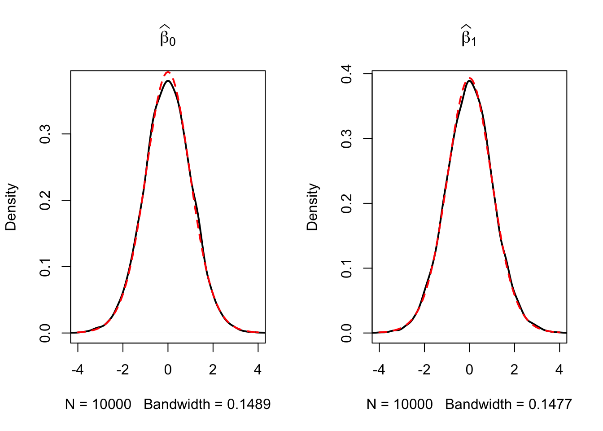

5 Hypothesis Tests and Confidence Intervals in the Simple Linear Regression Model
In this chapter, we continue with the treatment of the simple linear regression model. The following subsction discuss how we may use our knowledge about the sampling distribution of the OLS estimator in order to make statements regarding its uncertainty.
These subsections cover the following topics:
Testing Hypotheses about regression coefficients
Confidence intervals for regression coefficients
Regression when \(X\) is a dummy variable
Heteroskedasticity and Homoskedasticity
Testing Two-Sided Hypotheses Concerning \(\beta_1\)
Using the fact that \(\hat{\beta}_1\) is approximately normal distributed in large samples (see Key Concept 4.4), testing hypothesis about the true value \(\beta_1\) can be done with the same approach as discussed in chapter 3.2.
Key Concept 5.1
General Form of the \(t\)-Statistic
Remember from chapter 3 that a general \(t\)-statistic has the form
\[ t = \frac{\text{estimated value} - \text{hypothesized value}}{\text{standard error of the estimator}}. \]
Key Concept 5.2
Testing Hyothesis about \(\beta_1\)
For testing the hypothesis \(H_0: \beta_1 = \beta_{1,0}\), we need to perform the following steps:
- Compute the standard error of \(\hat{\beta}_1\), \(SE(\hat{\beta}_1)\)
\[ SE(\hat{\beta}_1) = \sqrt{ \hat{\sigma}^2_{\hat{\beta}_1} } \ \ , \ \ \hat{\sigma}^2_{\hat{\beta}_1} = \frac{1}{n} \times \frac{\frac{1}{n-2} \sum_{i=1}^n (X_i - \overline{X})^2 \hat{u_i}^2 }{ \left[ \frac{1}{n} \sum_{i=1}^n (X_i - \overline{X})^2 \right]^2}. \]
- Compute the \(t\)-statistic
\[ t = \frac{\hat{\beta}_1 - \beta_{1,0}}{ SE(\hat{\beta}_1) }. \]
- Now, given a two sided alternative (\(H_1:\beta_1 \neq \beta_{1,0}\)) we reject at the \(5\%\) level if \(|t^{act}| > 1.96\) or, equivalently, if the \(p\)-value is less than \(0.05\).
Recall the definition of the \(p\)-value:
The last equality holds due to the normal approximation for large samples.
Consider again the OLS regression stored in linear_model from Chapter 4 that gave us the regression line
\[ \widehat{TestScore} \ = \underset{(9.47)}{698.9} - \underset{(0.49)}{2.28} \times STR \ , \ R^2=0.051 \ , \ SER=18.6. \]
For testing a hypothesis about the slope parameter (the coefficient on \(STR\)), we need \(SE(\hat{\beta}_1)\), the standard error of the respective point estimator. As common in the literature, standard errors are presented in parantheses below the point estimates.
As can be witnessed in Key Concept 5.1 it is rather cumbersome to compute the standard error and thus the \(t\)-statistic by hand. The question You should be asking Yourself right now is obvious: can we obtain these values with minimum effort using R? Yes, we can. Let us first use summary() to get a summary on the estimated coefficients in linear_model.
# print the summary of coefficients to the console
summary(linear_model)$coefficients## Estimate Std. Error t value Pr(>|t|)
## (Intercept) 698.932949 9.4674911 73.824516 6.569846e-242
## STR -2.279808 0.4798255 -4.751327 2.783308e-06When looking at the second column of the coefficients’ summary, we discover values for \(SE(\hat\beta_0)\) and \(SE(\hat\beta_1)\). Also, in the third column, named t value, we find \(t\)-statistics \(t^{act}\) suitable for tests of the individual hypotheses \(H_0: \beta_0=0\) and \(H_0: \beta_1=0\). Furthermore, the output provides us with \(p\)-values corresponding to both tests against the two-sided alternatives \(H_1:\beta_0\neq0\) respectively \(H_1:\beta_1\neq0\) in the fourth column of the table.
Let us have a closer look at the test of
\[H_0: \beta_1=0 \ \ \ vs. \ \ \ H_1: \beta_1 \neq 0.\]
Using our revisited knowledge about \(t\)-statistics we find that
\[ t^{act} = \frac{-2.279808 - 0}{0.4798255} \approx - 4.75. \]
What does this tell us about the significance of the estimated coefficient? We reject the null hypothesis at the \(5\%\) level of significance since \(|t^{act}| > 1.96\) that is the observed test statistic falls into the region of rejection. Or, alternatively and leading to the same result, we have \(p\text{-value} = 2.78*10^{-6} < 0.05\). We conclude that the coefficient is significantly different from zero. With other words, our analysis provides evidence that the clase size has an influence on the students test scores. We say that \(\beta_1\) is significantly different from \(0\) at the level of \(5\%\).
Note that, although the difference is negligible in the present case as we will see later, summary() does not perform the normal approximation but calculates \(p\)-values using the appropriate \(t\)-distribution instead. Generally, the degrees of freedom are determined in the following manner:
\[ \text{DF} = n - k - 1 \]
where \(n\) is the number of observations used to estimate the model and \(k\) is the number of regressors, excluding the intercept. In our case, we have \(n=420\) observations and the only regressor is \(STR\) so \(k=1\). A sleek way to determine the model degress of freedom using R is
# determine degrees of freedom
linear_model$df.residual## [1] 418Hence, for the sampling distribution of \(\hat\beta_1\) we have
\[ \hat\beta_1 \sim t_{418}\] such that the \(p\)-value for a two-sided significance test can be obtained by executing the following code:
2 * pt(-4.751327, df = 418)## [1] 2.78331e-06The result is very close to the value provided by summary. However since \(n\) is sufficiently large one could just as well use the standard normal density to compute the \(p\)-value:
2 * pnorm(-4.751327)## [1] 2.02086e-06The difference is indeed negligible. These findings tell us that, if \(H_0: \beta_1 = 0\) is true and we were to repeat the whole process of gathering observations and estimating the model, chances of observing a \(\hat\beta_1 \geq |-4.75|\) are roughly \(1:359285\) — so higher chances than winning the lottory next saturday but still very unlikely!
Using R we may visualise how such a statement is made when using the normal approximation. This reflects the principles depicted in figure 5.1 in the book. Do not let the following code chunk deter You: the code is somewhat longer than the usual examples and looks unappealing but there is a lot of repetition since color shadings and annotations are added on both tails of the normal distribution. We recommend You to execute the code step by step in order to see how the graph is augmented with the annotations.
# Plot the standard normal on the domain [-6,6]
t <- seq(-6,6,0.01)
plot(x = t,
y = dnorm(t, 0, 1),
type = "l",
col = "steelblue",
lwd = 2,
yaxs = "i",
axes = F,
ylab = "",
main = "Calculating the p-Value of a Two-Sided Test When t^act = -4.75",
cex.lab = 0.7
)
tact <- -4.75
axis(1, at = c(0,-1.96,1.96,-tact,tact), cex.axis=0.7)
# Shade the critical regions using polygon()
## critical region in left tail
polygon(x = c(-6, seq(-6,-1.96,0.01),-1.96),
y = c(0, dnorm(seq(-6,-1.96,0.01)),0),
col = 'orange'
)
## critical region in right tail
polygon(x = c(1.96, seq(1.96, 6, 0.01), 6),
y = c(0, dnorm(seq(1.96, 6, 0.01)), 0),
col = 'orange'
)
# Add arrows and texts indicating critical regions and the p-value
arrows(-3.5, 0.2, -2.5, 0.02, length = 0.1)
arrows(3.5, 0.2, 2.5, 0.02, length = 0.1)
arrows(-5, 0.16, -4.75, 0, length = 0.1)
arrows(5, 0.16, 4.75, 0, length = 0.1)
text(-3.5,0.22, labels = paste("0.025=",expression(alpha),"/2",sep = ""), cex = 0.7)
text(3.5,0.22, labels = paste("0.025=",expression(alpha),"/2",sep = ""), cex = 0.7)
text(-5,0.18, labels = expression(paste("-|",t[act],"|")), cex = 0.7)
text(5,0.18, labels = expression(paste("|",t[act],"|")), cex = 0.7)
# Add ticks indicating critical values at the 0.05-level, t^act and -t^act
rug(c(-1.96,1.96), ticksize = 0.145, lwd = 2, col = "darkred")
rug(c(-tact,tact), ticksize = -0.0451, lwd = 2, col = "darkgreen")
The \(p\)-Value is the area under the curve to left of \(-4.75\) plus the area under the curve to the right of \(4.75\). As we already know from the calculations above, this value is very small.
Confidence Intervals for Regression Coefficients
As we already know, estimates of the regression coefficients \(\beta_0\) and \(\beta_1\) are afflicted with sampling uncertainty, see chapter 4. Therefore, we will never estimate the exact true value of these parameters from sample data in an empirical application. However, we may construct confidence intervals for the intercept and the slope parameter.
A \(95\%\) confidence interval for \(\beta_i\) has two equivalent definitions:
- The interval is the set of values for which a hypothesis test to the level of \(5\%\) cannot be rejected.
- The interval has a probability of \(95\%\) to contain the true value of \(\beta_i\). So in \(95\%\) of all samples that could be drawn, the confidence interval will cover the true value of \(\beta_i\).
We also say that the interval has a confidence level of \(95\%\). The idea is summarized in Key Concept 5.3.
Key Concept 5.3
A Confidence Interval for \(\beta_i\)
Imagine You could draw all possible random samples of given size. The interval that contains the true value \(\beta_i\) in \(95\%\) of all samples is given by the expression
\[ \text{KI}_{0.95}^{\beta_i} = \left[ \hat{\beta}_i - 1.96 \times SE(\hat{\beta}_i) \, , \, \hat{\beta}_i + 1.96 \times SE(\hat{\beta}_i) \right]. \]
Equivalently, this interval can be seen as the set of null hypotheses for which a \(5\%\) two-sided hypothesis test does not reject.
R Simulation Study 5.1
To get a better understanding of confidence intervalls we will conduct another simulation study. For now, assume that we are confronted with the following sample of \(n=100\) observations on a single variable \(Y\) where
\[ Y_i \overset{i.i.d}{\sim} N(5,25) \ \ \forall \ i = 1, \dots, 100.\]
# set random seed for reproducibility
set.seed(4)
# generate and plot the sample data
Y <- rnorm(n = 100,
mean = 5,
sd =5
)
plot(Y,
pch=19,
col = "steelblue"
)
We assume that the data is generated by the model
\[ Y_i = \mu + \epsilon_i \]
where \(\mu\) is the unknown constant and we know that \(\epsilon_i \overset{i.i.d.}{\sim} N(0,25)\). In this model, the OLS estimator for \(\mu\) is given by
\[ \hat\mu = \overline{Y} = \frac{1}{n} \sum_{i=1}^n Y_i \]
(try to verify this!) i.e. the sample average of the \(Y_i\). It further holds that
\[ SE(\hat\mu) = \frac{\sigma_{\epsilon}}{\sqrt{n}} = \frac{5}{\sqrt{100}}. \]
A large sample \(95\%\) confidence intervall for \(\mu\) is then given by
\[\begin{equation} KI^{\mu}_{0.95} = \left[\hat\mu - 1.96 \times \frac{5}{\sqrt{100}} \ , \ \hat\mu + 1.96 \times \frac{5}{\sqrt{100}} \right]. \tag{5.1} \end{equation}\]It is fairly easy to compute this interval in R by hand. The following code chunck generates a named vector containing the interval bounds:
cbind(
CIlower = mean(Y) - 1.96 * 5/10,
CIupper = mean(Y) + 1.96 * 5/10
)## CIlower CIupper
## [1,] 4.502625 6.462625Nowing that \(\mu = 5\) we see that our example covers the true value for the present sample.
As opposed to real world examples, we can use R to get a better understanding of confidence intervals by repeatedly sampling data, estimating \(\mu\) and computing the confidence interval for \(\mu\) as in (5.1).
The procedure is as follows:
- We initialize the vectors
lowerandupperin which the simulated interval boundaries are to be saved. We want to simulate \(10000\) intervals so both vectors are set to have this length. - We use a
for()loop to sample \(100\) observations from the \(N(5,25)\) distribution and compute \(\hat\mu\) as well as the boundaries of the confidence interval in every iteration of the loop. - At last we join
lowerandupperin an array.
# set random seed
set.seed(1)
# initialize vectors of lower and upper interval boundaries
lower <- numeric(10000)
upper <- numeric(10000)
# loop sampling / estimation / CI
for(i in 1:10000) {
Y <- rnorm(100, mean = 5, sd =5)
lower[i] <- mean(Y) - 1.96 * 5/10
upper[i] <- mean(Y) + 1.96 * 5/10
}
# join vectors of interval boundaries
CIs <- cbind(lower, upper)According to Key Concept 5.3 we expect that the fraction of the \(10000\) simulated intervals saved in the array CIs that contain the true value \(\mu=5\) should be roughly \(95\%\). We can check this using logical operators.
sum(CIs[,1] <= 5 & 5 <= CIs[,2])/10000## [1] 0.9487The simulation shows that the fraction of intervals covering \(\mu=5\), i.e. those intervals for which \(H_0: \mu = 5\) cannot be rejected is close to the theoretical value of \(95%\).
Let us draw a plot of the first \(100\) simulated confidence intervals and indicate those which do not cover the true value of \(\mu\). We do this by adding horizonal lines representing the confidence intervals on top of each other.
# identify intervals not covering mu
# (4 intervals out of 100)
ID <- which(!(CIs[1:100,1] <= 5 & 5 <= CIs[1:100,2]))
# initialize the plot
plot(0,
xlim = c(3,7),
ylim = c(1,100),
ylab = "Sample",
xlab = expression(mu),
main = "Confidence Intervals: Correct H0")
# setup color vector
colors <- rep(gray(0.6), 100)
colors[ID] <- "red"
# draw reference line at mu=5
abline(v=5, lty=2)
# add horizontal bars representing the CIs
for(j in 1:100) {
lines(c(CIs[j,1], CIs[j,2]),
c(j,j),
col = colors[j],
lwd=2)
}
We find that for the first 100 samples, the true null hypthesis is rejected in four cases so these intervals do not cover \(\mu=5\). We have indicated the intervals which lead to a rejection of the true null hypothesis by red color.
Let us now turn back to the example of test scores and class sizes.The regression model from chapter 4 is stored in linear_model. An easy way to get \(95\%\) confidence intervals for \(\beta_0\) and \(\beta_1\), the coefficients on (intercept) and STR, is to use the function confint(). We only have to provide a fitted model object as the argument object to this function. The confidence level is set to \(95\%\) by default but can be modified by setting the argument level, see ?confint.
confint(object = linear_model)## 2.5 % 97.5 %
## (Intercept) 680.32312 717.542775
## STR -3.22298 -1.336636Let us check if the calculation is done as we expect it to be. For \(\beta_1\), that is the coefficient on STR, according to the formula presented above the interval borders are computed as
\[ -2.279808 \pm 1.96 \times 0.4798255 \, \Rightarrow \, \text{KI}_{0.95}^{\beta_1} = \left[ -3.22, -1.34 \right] \]
so this actually leads to the same interval. Obviously, this interval does not contain the value zero what, as we have already seen in the previous section, leads to rejection of the null hypothesis \(\beta_{1,0} = 0\).
Regression when \(X\) is a Binary Variable
Instead of using a continuous regressor \(X\), we might be interested in running the regression
\[ Y_i = \beta_0 + \beta_1 D_i + u_i \tag{5.2} \]
where \(D_i\) is binary variable, a so-called dummy variable. For example, we may define \(D_i\) in the following way:
\[ D_i = \begin{cases} 1 \ \ \text{if $STR$ in $i^{th}$ school district < 20} \\ 0 \ \ \text{if $STR$ in $i^{th}$ school district $\geq$ 20} \\ \end{cases} \tag{5.3} \]
The regression model now is
\[ TestScore_i = \beta_0 + \beta_1 D_i + u_i. \tag{5.4} \]
Let us see how these data look like in a scatter plot:
# Create the dummy variable as defined above using a for loop
for (i in 1:nrow(CASchools)) {
if (CASchools$STR[i] < 20) {
CASchools$D[i] <- 1
} else {
CASchools$D[i] <- 0
}
}
# Plot the data
plot(CASchools$D, CASchools$score, # provide the data to be ploted
pch=20, # use filled circles as plot symbols
cex=0.5, # set size of plot symbols to 0.5
col="Steelblue", # set the symbols' color to "Steelblue"
xlab=expression(D[i]), # Set title and axis names
ylab="Test Score",
main = "Dummy Regression"
)
We see that with \(D\) as the regressor, it is not useful to think of \(\beta_1\) as a slope parameter since \(D_i \in \{0,1\}\), i.e. we only observe two discrete values instead of a continuoum of regressor values lying (in some range) on the real line. Simply put, there is no continuous line depicting the conditional expectation function \(E(TestScore_i | D_i)\) since this function is solely defined for \(X\)-positions \(0\) and \(1\).
Therefore, the interpretation of the coefficients in our regression model is as follows:
\(E(Y_i | D_i = 0) = \beta_0\) so \(\beta_0\) is the expected test score in districts where \(D_i=0\) i.e. where \(STR\) is below \(20\).
\(E(Y_i | D_i = 1) = \beta_0 + \beta_1\) or, using the result above, \(\beta_1 = E(Y_i | D_i = 1) - E(Y_i | D_i = 0)\). Thus, \(\beta_1\) is the difference in group specific expectations, i.e. the difference in expected test score between districts with \(STR < 20\) and those with \(STR \geq 20\).
We will now use R to estimate the dummy regression model as defined by equations (5.2) - (5.3) .
# estimate the dummy regression model
dummy_model <- lm(score ~ D, data = CASchools)
summary(dummy_model)##
## Call:
## lm(formula = score ~ D, data = CASchools)
##
## Residuals:
## Min 1Q Median 3Q Max
## -50.496 -14.029 -0.346 12.884 49.504
##
## Coefficients:
## Estimate Std. Error t value Pr(>|t|)
## (Intercept) 650.077 1.393 466.666 < 2e-16 ***
## D 7.169 1.847 3.882 0.00012 ***
## ---
## Signif. codes: 0 '***' 0.001 '**' 0.01 '*' 0.05 '.' 0.1 ' ' 1
##
## Residual standard error: 18.74 on 418 degrees of freedom
## Multiple R-squared: 0.0348, Adjusted R-squared: 0.0325
## F-statistic: 15.07 on 1 and 418 DF, p-value: 0.0001202One can see that the expected test score in districts with \(STR < 20\) (\(D_i = 1\)) is predicted to be \(650.1 + 7.17 = 657.27\) while districs with \(STR \geq 20\) (\(D_i = 0\)) are expected to have an average test score of only \(650.1\).
Group specific predictions can be added to the plot by execution of the following code chunk:
# add group specific predictions to the plot
points(x = CASchools$D,
y = predict(dummy_model),
col = "red",
pch = 20
)Here we use the function predict() to obtain estimates of the group specific means. The red dots represent these sample group averages. Accordingly, \(\hat{\beta}_1 = 7.17\) can be seen as the difference in group averages.
By inspection of the output generated with summary(dummy_model) we may also find an answer to the question whether there is a statistically significant difference in group means. This in turn would support the hypothesis that students perform differently when they are taught in small classes rather than in large groups. We can assess this by a two-tailed test of the hypothesis \(H_0: \beta_1 = 0\). Conviniently the \(t\)-statistic and the corresponding \(p\)-value for this test are computed defaultly by summary()!
Since t value \(= 3.88 > 1.96\) we reject the null hypothesis at the \(5\%\) level of significance. The same conclusion can be made when using the \(p\)-value which reports significance to the \(0.00012\%\) level.
As done with linear_model, we may alternatively use the confint() function to compute a \(95\%\) confidence interval for the true difference in means and see if the hypothesised value is an element of this confidence set.
# confidence intervals for coefficients in the dummy regression
confint(dummy_model)## 2.5 % 97.5 %
## (Intercept) 647.338594 652.81500
## D 3.539562 10.79931We reject the hypothesis that there is no difference between group means at the \(5\%\) significance level since \(\beta_{1,0} = 0\) lies outside of \([3.54, 10.8]\), the \(95\%\) confidence interval for the coefficient on \(D\).
Heteroskedasticity and Homoskedasticity
All inference made in the previous chapters relies on the assumption that the error variance does not vary as regressor values change. But this will not necessarily be the case in most empirical applications.
Key Concept 5.4
Heteroskedasticity and Homoskedasticity
We say that the error term of our regression model is homoskedastic if the variance of the conditional distribution of \(u_i\) given \(X_i\), \(Var(u_i|X_i=x)\), is constant for all observations in our sample \[ \text{Var}(u_i|X_i=x) = \sigma^2 \ \forall \ i=1,\dots,n. \]
If instead there is dependence of the conditional variance of \(u_i\) on \(X_i\), the error term is said to be heteroskedastic. We then write \[ \text{Var}(u_i|X_i=x) = \sigma_i^2 \ \forall \ i=1,\dots,n. \]
- Homoskedasticity is a special case of heteroskedasticity.
For a better understanding of heteroskedasticity, we generate some bivariate heteroskedastic data, estimate a linear regression model and then use boxplots to depict the conditional distributions of the residuals.
# load scales package for custom color opacities
library(scales)
# Genrate some heteroskedastic data
set.seed(123)
x <- rep(c(10,15,20,25),each=25)
e <- rnorm(100, sd=12)
i <- order(runif(100, max=dnorm(e, sd=12)))
y <- 720 - 3.3 * x + e[rev(i)]
# Estimate the model
mod <- lm(y ~ x)
# Plot the data
plot(x=x,
y=y,
main="An Example of Heteroskedasticity",
xlab = "Student-Teacher Ratio",
ylab = "Test Score",
cex = 0.5,
pch = 19,
xlim = c(8,27),
ylim = c(600,710)
)
# Add the regression line to the plot
abline(mod, col="darkred")
# Add boxplots to the plot
boxplot(y ~ x,
add = TRUE,
at = c(10,15,20,25),
col = alpha("gray", 0.4),
border = "black"
)
For this artificial data it is straightforward to see that we face unequal conditional error variances. Specifically, we observe that the variance in test scores (and therefore the variance of the errors committed) increases with the student teacher ratio.
A Real-World Example for Heteroskedasticity
Think about the economic value of education: if there would not be an expected economic value-added to receiving education at university, You probably would not be reading this script right now. A starting point to empirical verification of such a relation exists is to have data on individuals that are in an employment relationship. More precisely, we need data on wages and education in order to work with a model like
\[ wage_i = \beta_0 + \beta_1 \cdot education_i + u_i. \]
What can be presumed about this relation? It is likely that, on average, higher educated workers earn more money than workers with less education so we expect to estimate an upward sloping regression line.
Also it seems plausible that workers with better education are more likely to meet the requirements for the well-paid jobs. However, workers with low education will have no shot at those well-paid jobs. Therefore it seems plausible that the distribution of earnings spreads out as education increases. In other words: we expect that there is heteroskedasticity!
To verify this empirically we may use real data on hourly earnings and the number of years of education of employees. Such data can be found in CPSSWEducation. This data set is part of the package AER and stems from the Current Population Survey (CPS) which is conducted periodically by the Bureau of Labor Statistics in the US.
The subsequent code chunks demonstrate how to load the data into R and how to produce a plot in the fashion of figure 5.3 in the book.
# load package and attach data
library(AER)
data("CPSSWEducation")
attach(CPSSWEducation)
# get an overview
summary(CPSSWEducation)## age gender earnings education
## Min. :29.0 female:1202 Min. : 2.137 Min. : 6.00
## 1st Qu.:29.0 male :1748 1st Qu.:10.577 1st Qu.:12.00
## Median :29.0 Median :14.615 Median :13.00
## Mean :29.5 Mean :16.743 Mean :13.55
## 3rd Qu.:30.0 3rd Qu.:20.192 3rd Qu.:16.00
## Max. :30.0 Max. :97.500 Max. :18.00# estimate a simple regression model
labor_model <- lm(earnings ~ education)
# plot observations and add the regression line
plot(education,
earnings,
ylim = c(0,150)
)
abline(labor_model, col="steelblue", lwd=2)
From inspecting the plot we can tell that the mean of the distribution of earnings increases with the level of education. This is also suggested by formal analysis: the estimated regression model stored in labor_mod asserts that there is a positive relation between years of education and earnings.
labor_model##
## Call:
## lm(formula = earnings ~ education)
##
## Coefficients:
## (Intercept) education
## -3.134 1.467The estimated regression equation states that, on average, an additional year of education increases a workers hourly earnings by about \(\$ 1.47\). Once more we use confint() to obtain a \(95\%\) confidence interval for both regression coefficients.
confint(labor_model)## 2.5 % 97.5 %
## (Intercept) -5.015248 -1.253495
## education 1.330098 1.603753Since the intervall is \([1.33, 1.60]\) we can reject the hypothesis that the coefficient on education is zero at the \(5\%\) level.
What is more, the plot indicates that there is heteroskedasticity: if we assume the regression line to be a reasonably good representation of the conditional mean function \(E(earnings_i\vert education_i)\), the dispersion of hourly earnings around that function cleary increases with the level of education, i.e. the variance of the distribution of earnings increases. In other words: the variance of the residuals increases with the years of education so that the regression errors are heteroskedastic.
This example makes a case that it is doubtful to assume homoskedasticity in many economic applications.
Should We Care About Heteroskedasticity?
To answer this question, let us see how the variance of \(\hat\beta_1\) is computed under the assumption of homoskedasticity. In this case we have
\[ \sigma^2_{\hat\beta_1} = \frac{\sigma^2_u}{n \cdot \sigma^2_X} \tag{5.5} \]
which is a simplified version of the general equation (4.1) presented in Key Concept 4.4. See Appendix 5.1 of the book for details on the derivation. The summary() function in R estimates (5.5) by
\[ \overset{\sim}{\sigma}^2_{\hat\beta_1} = \frac{SER^2}{\sum_{i=1}^n (X_i - \overline{X})^2} \ \ \text{where} \ \ SER=\frac{1}{n-2} \sum_{i=1}^n \hat u_i^2. \]
Thus summary() estimates the homoskedasticity-only standard error
\[ \sqrt{ \overset{\sim}{\sigma}^2_{\hat\beta_1} } = \sqrt{ \frac{SER^2}{\sum(X_i - \overline{X})^2} }. \]
This in fact is an estimator for the standard deviation of the estimator \(\hat{\beta}_1\) that is inconsistent for the true value \(\sigma^2_{\hat\beta_1}\) when there is heteroskedasticity. The implication is that \(t\)-statistics computed in the manner of Key Concept 5.1 do not have a standard normal distribution, even in large samples. This issue may invalidate inference drawn when using the previously treated tools for hypothesis testing: we should be cautious when making statements about the significance of regression coefficients on the basis of \(t\)-statistics as computed by summary() or confidence intervals produced by confint() if it is doubtful for the assumption of homoskedasticity to hold!
We will now use R to compute the homoskedasticity-only standard error estimate for \(\hat{\beta}_1\) in the test score regression model linear_model by hand and see if it matches the value produced by summary().
# Store model summary in 'mod'
model <- summary(linear_model)
# Extract the standard error of the regression from model summary
SER <- model$sigma
# Compute the variation in 'size'
V <- (nrow(CASchools)-1) * var(CASchools$STR)
# Compute the standard error of the slope parameter's estimator and print it
SE.beta_1.hat <- sqrt(SER^2/V)
SE.beta_1.hat## [1] 0.4798255# Use logical operators to see if the value computed by hand matches the one provided # in mod$coefficients. Round estimates to four decimal places
round(model$coefficients[2,2], 4) == round(SE.beta_1.hat, 4)## [1] TRUEIndeed, the estimated values are equal.
Computation of Heteroskedasticity-Robust Standard Errors
Cosistent estimation of \(\sigma_{\hat{\beta}_1}\) under heteroskedasticity is granted when the following robust estimator is used.
\[ SE(\hat{\beta}_1) = \sqrt{ \frac{ \frac{1}{n-2} \sum_{i=1}^n (X_i - \overline{X})^2 \hat{u}_i^2 }{ \left[ \frac{1}{n} \sum_{i=1}^n (X_i - \overline{X})^2 \right]^2} } \tag{5.6} \]
Standard error estimates computed this way are also referred to as Eicker-Huber-White standard errors. It can be quite cumbersome to do this calculation by hand. Luckily, there are R function for that purpose. A convenient one, named vcovHC() is part of the sandwich package. This function can compute a variety of standard error estimators. The one brought forward in (5.6) is computed when the argument type is set to "HC0".
Let us now compute robust standard error estimates for the coefficients in linear_model.
# load the sandwich package
library(sandwich)
# compute robust standard error estimates
vcov <- vcovHC(linear_model, type = "HC0")
vcov## (Intercept) STR
## (Intercept) 106.908469 -5.3383689
## STR -5.338369 0.2685841The output of vcovHC() is the variance-covariance matrix of coefficient estimates. We are interested in the square root of the diagonal elements of this matrix since these values are the standard error estimates we seek.
When we have k > 1 regressors, writing down the equations for a regression model becomes very messy. A more convinient way to denote and estimate so-called multiple regression models is matrix algebra. This is why functions like vcovHC() produce matrices. In the simple linear regression model, the variances and covariances of the coefficient estimators can be gathered in the variance-covariance matrix
\[\begin{equation} \text{Var} \begin{pmatrix} \hat\beta_0 \\ \hat\beta_1 \end{pmatrix} = \begin{pmatrix} \text{Var}(\hat\beta_0) & \text{Cov}(\hat\beta_0,\hat\beta_1) \\ \text{Cov}(\hat\beta_0,\hat\beta_1) & \text{Var}(\hat\beta_1) \end{pmatrix} \end{equation}\]which is a symmetric matrix. So vcovHC() gives us \(\widehat{\text{Var}}(\hat\beta_0)\), \(\widehat{\text{Var}}(\hat\beta_1)\) and \(\widehat{\text{Cov}}(\hat\beta_0,\hat\beta_1)\) but most of the time we are interested in the diagonal elements of the estimated matrix.
# compute the square root of the diagonal elements in vcov
robust_se <- sqrt(diag(vcov))
robust_se## (Intercept) STR
## 10.339655 0.518251Now assume we want to generate a coefficient summary as provided by summary() but with robust standard error estimates for the coefficient estimators, robust \(t\)-statistics and corresponding \(p\)-values for the regression model linear_model. This can be done using coeftest() from the package lmtest, see ?coeftest. Further we specify in the argument vcov. that vcov, the Eicker-Huber-White estimate of the variance matrix we have computed before should be used.
# We invoke the function `coeftest()` on our model
coeftest(linear_model, vcov. = vcov)##
## t test of coefficients:
##
## Estimate Std. Error t value Pr(>|t|)
## (Intercept) 698.93295 10.33966 67.597 < 2.2e-16 ***
## STR -2.27981 0.51825 -4.399 1.382e-05 ***
## ---
## Signif. codes: 0 '***' 0.001 '**' 0.01 '*' 0.05 '.' 0.1 ' ' 1We see that values reported in the column Std. Error equal the ones received using sqrt(diag(vcov)).
How severe are the implications of using homoskedasticity-only standard errors in the presence of heteroskedasticity? The answer is: it depends. As mentioned above we may face the risk of drawing wrong conclusions when conducting significance tests.
Let us illustrate this by generating another example of a heteroskedastic data set and use it to estimate a simple regression model. We take
\[ Y_i = \beta_1 \cdot X_i + u_i \ \ , \ \ u_i \overset{i.i.d.}{\sim} N(0,0.36 \cdot X_i^2) \]
with \(\beta_1=1\) as the data generating process. The assumption of homoskedasticity is violated since the variance of the errors is a non-linear increasing function of \(X_i\) but the errors have zero mean and are i.i.d. such that the assumptions made in Key Concept 4.3 are not violated. As before, the true conditional mean function we are interested in estimating is
\[ E(Y_i\vert X_i) = X_i. \]
# set random seed
set.seed(21)
# generate heteroskedastic data
X <- 1:1000
Y <- rnorm(n = 1000, mean = X, sd = 0.6*X)
# estimate a simple regression model
reg <- lm(Y ~ X)We plot the data and add the regression line.
# plot the data
plot(X, Y, pch = 19, col="steelblue", cex = 0.8)
# add the regression line to the plot
abline(reg, col = "darkred", lwd = 1.5)
The plot clearly shows that the data are heteroskedastic as the variance of \(Y\) grows with \(X\). We continue by conducting a significance test of the (true) null hypothesis \(H_0: \beta_1 = 1\) twice, once using the homoskedasticity-only standard error formula and once with the robust version (5.6). An idiomatic way to do this in R is the function linearHypothesis() from the package car, see ?linearHypothesis. It allows to test linear hypotheses about parameters in linear models in a similar way as done with a \(t\)-statistic and offers various robust covariance matrix estimators. We test by comparing the tests’ \(p\)-values to the significance level of \(5\%\).
linearHypothesis() computes a test statistic that follows an \(F\) distribution under the null hypothesis. We will not loose too much words on the theory behind it at this time. In general, the core idea of the \(F\) test is to compare the fit of different models. When testing a hypothesis about a single coefficient using a \(F\) test, one can show that the test statistic is simply the square of the corresponding \(t\)-statistic:
\[ F = t^2 = \frac{\hat\beta_i - \beta_{i,0}}{SE(\hat\beta_i)} \sim F_{1,n-k-1} \]
In linearHypothesis(), the hypothesis must be provided as a string. The function returns an object of class anova which contains further information on the test that can be accessed using the $ operator. For example, we can obtain the test’s \(p\)-value by adding $‘Pr(>F)’ right behind the function call.# test using default standard error
linearHypothesis(reg, hypothesis.matrix = "X = 1")$'Pr(>F)'[2] < 0.05## [1] TRUE# test using robust standard error
linearHypothesis(reg, hypothesis.matrix = "X = 1", white.adjust = "hc0")$'Pr(>F)'[2] < 0.05## [1] FALSEThis is a good example of what can go wrong if we do not care for heteroskedasticity: for the data set at hand the default method rejects the null hypothesis \(\beta_1 = 1\) although it is true. Using the robust standard error though the test does not reject the null. Of course we could argue that this is just a coincidence and both tests are equally well in maintaining the type I error rate of \(5\%\). This can be further investigated by computing Monte Carlo estimates of the rejection frequencies of both tests on the basis of a large number of random samples. We proceed as follows:
- initialize vectors
tandt.robas typenumericwith length \(10000\). - Using a
for()loop, we generate \(10000\) heteroskedastic random samples of size \(1000\), estimate the regression model and check whether the tests wrongly reject the null at the level of \(5\%\) using comparison operators. The results are stored in the respective vectorstandt.rob. - After the simulation, we compute the fraction of rejections for both tests.
# initialize vectors t and t.rob
t <- numeric(10000)
t.rob <- numeric(10000)
# loop sampling and estimation
for (i in 1:10000) {
# sample data
X <- 1:1000
Y <- rnorm(n = 1000, mean = X, sd = 0.6*X)
# estimate regression model
reg <- lm(Y ~ X)
# homoskedasdicity-only significance test
t[i] <- linearHypothesis(reg, "X = 1")$'Pr(>F)'[2] < 0.05
# robust significance test
t.rob[i] <- linearHypothesis(reg, "X = 1", white.adjust = "hc0")$'Pr(>F)'[2] < 0.05
}
# compute fraction of rejections
cbind(t = sum(t), t.rob = sum(t.rob)) / 10000## t t.rob
## [1,] 0.0762 0.0524The results show that we face an increased risk of falsely rejecting the null using the homoskedasticity-only standard error for the testing problem at hand: with the common standard error estimator, \(7.62\%\) of all tests reject the null hypothesis falsely. In contrast, with the robust test statistic we are close to the nominal level of \(5\%\).
The Gauss-Markov Theorem
When estimating regression models, we know that the results of the estimation procedure are outcomes of a random process. However, when using unbiased estimators, at least on average, we estimate the true parameter. When comparing different unbiased estimators, it is therefore interesting to know which one has the highest precision: being aware that the likelihood of estimating the exact value of the parameter of interest is \(0\) in an empirical application, we want to make sure that the likelihood of obtaining an estimate very close to the true value is as high as possible. We want to use the estimator with the lowest variance of all unbiased estimators. The Gauss-Markov theorem states that the OLS estimator has this property under certain conditions.
Key Concept 5.5
The Gauss-Markov Theorem for \(\hat{\beta}_1\)
Suppose that the assumptions made in Key Concept 4.3 hold and that the errors are homoskedastic. The OLS estimator is the best (in the sense of smallest variance) linear conditionally unbiased estimator (BLUE) in this setting.
Let us have a closer look at what this means:
Estimators of \(\beta_1\) that are linear functions of the \(Y_1, \dots, Y_n\) and that are unbiased conditionally on the regressor \(X_1, \dots, X_n\) can be written as \[ \overset{\sim}{\beta}_1 = \sum_{i=1}^n a_i Y_i \] where the \(a_i\) are weights that are allowed to depend on the \(X_i\) but not on the \(Y_i\).
We already know that \(\overset{\sim}{\beta}_1\) has a sampling distribution: \(\overset{\sim}{\beta}_1\) is a linear function of the \(Y_i\) which are random variables. If now \[ E(\overset{\sim}{\beta}_1 | X_1, \dots, X_n) = \beta_1 \] we say that \(\overset{\sim}{\beta}_1\) is a linear unbiased estimator of \(\beta_1\), conditionally on the \(X_1, \dots, X_n\).
- We may ask if \(\overset{\sim}{\beta}_1\) is also the best estimator in this class, i.e. the most efficient one of all linear unbiased estimators where “most efficient” means smallest variance. The weights \(a_i\) play an important role here and it turns out that OLS uses just the right weights to have the BLUE property.
R Simulation Study: BLUE Estimator
Consider the case of a regression of \(Y_i,\dots,Y_n\) only on a constant. Here, the \(Y_i\) are assumed to be a random sample from a population with mean \(\mu\) and variance \(\sigma^2\). We know that the OLS estimator in this model is simply the sample mean:
\[\begin{equation} \hat{\beta}_1 = \overline{\beta}_1 = \sum_{i=1}^n \underbrace{\frac{1}{n}}_{=a_i} Y_i \tag{5.2} \end{equation}\]Clearly, each observation is weighted by
\[a_i = \frac{1}{n}.\]
and We also know that \(\text{Var}(\hat{\beta}_1)=\text{Var}(\hat\beta_1)=\frac{\sigma^2}{n}\).
We will now use R for a simulation study that illustrates what happens to the variance of (5.2) if different weights \[ w_i = \frac{1 \pm \epsilon}{n} \] are assigned to either half of the sample \(Y_1, \dots, Y_n\) instead of using \(\frac{1}{n}\), the weights implied by OLS.
# Set sample size and number of repititions
n <- 100
reps <- 1e5
# Choose epsilon and create a vector of weights as defined above
epsilon <- 0.8
w <- c(rep((1+epsilon)/n,n/2),
rep((1-epsilon)/n,n/2)
)
# Draw a random sample y_1,...,y_n from the standard normal distribution,
# use both estimators 1e5 times and store the result in thr vectors ols and
# weightedestimator
ols <- rep(NA, reps)
weightedestimator <- rep(NA, reps)
for (i in 1:reps) {
y <- rnorm(n)
ols[i] <- mean(y)
weightedestimator[i] <- crossprod(w,y)
}
# Plot kernel density estimates of the estimators' distributions
## OLS
plot(density(ols),
col = "purple",
lwd = 3,
main = "Density of OLS and Weighted Estimator",
xlab = "Estimates"
)
## Weighted
lines(density(weightedestimator),
col = "steelblue",
lwd = 3
)
## Add a dashed line at 0 and a legend to the plot
abline(v = 0, lty = 2)
legend('topright',
c("OLS","Weighted"),
col = c("purple","steelblue"),
lwd = 3
)
What conclusion can we draw from the result?
- Both estimators seem to be unbiased: the means of their estimated distributions are zero.
- The
weightedestimatoris less efficient than theolsestimator: there is higher dispersion when weights are \(w_i = \frac{1 \pm 0.8}{100}\) instead of \(w_i=\frac{1}{100}\) as required by the OLS solution.
Hence, our simulation results confirm what is stated by the Gauss-Markov Theorem.
Using the \(t\)-Statistic in Regression When the Sample Size Is Small
The three OLS assumptions discussed in chapter 4 (see Key Concept 4.3) are the foundation results on the large sample distribution of the OLS estimators in the simple regression model. What can be said about the distribution of the estimators and their \(t\)-statistics when the sample size is small and the population distribution of the data is unkown? Provided that the three least squares assumptions hold and the errors are normally distributed and homoskedastic (we refer to these conditions as the homoskedastic normal regression assumptions), we have normally distributed estimators and \(t\)-distributed test tatistics. Recall the definition of a \(t\)-distributed variable
\[ \frac{Z}{\sqrt{W/m}} \sim t_m\]
where \(Z\) is a standard normal random variable, \(W\) is \(\chi^2\) distributed with \(m\) degrees of freedom and \(Z\) and \(W\) are independent. See section 5.6 in the book for a more detailed discussion of the small sample distribution of \(t\)-statistics in regression.
Let us simulate the distribution of regression \(t\)-statistics based on a large number of small random samples (\(n=20\)) and compare their simulated distributions to their theoretical distribution which sould be \(t_{18}\), the \(t\)-distribution with \(18\) degrees of freedom (recall that \(\text{DF}=n-k-1\)).
# initialize vectors
beta_0 <- numeric(10000)
beta_1 <- numeric(10000)
# loop sampling / estimation / t statistics
for (i in 1:10000) {
X <- runif(20,0,20)
Y <- rnorm(n = 20, mean = X)
reg <- summary(lm(Y ~ X))
beta_0[i] <- (reg$coefficients[1,1] - 0)/(reg$coefficients[1,2])
beta_1[i] <- (reg$coefficients[2,1] - 1)/(reg$coefficients[2,2])
}
# plot distributions and compare with t_18 density function
par(mfrow = c(1,2))
# plot simulated density of beta_0
plot(density(beta_0),
lwd= 2 ,
main = expression(widehat(beta)[0]),
xlim = c(-4, 4)
)
# add t_18 density to the plot
curve(dt(x, df = 18),
add = T,
col = "red",
lwd = 2,
lty = 2
)
# plot simulated density of beta_1
plot(density(beta_1),
lwd = 2,
main = expression(widehat(beta)[1]), xlim=c(-4,4)
)
# add t_18 density to the plot
curve(dt(x, df = 18),
add = T,
col = "red",
lwd = 2,
lty = 2
) 
The outcomes are consistent with our expectations: the empirical distributions of both estimators seem to track the \(t_{18}\) distribution quite closely.